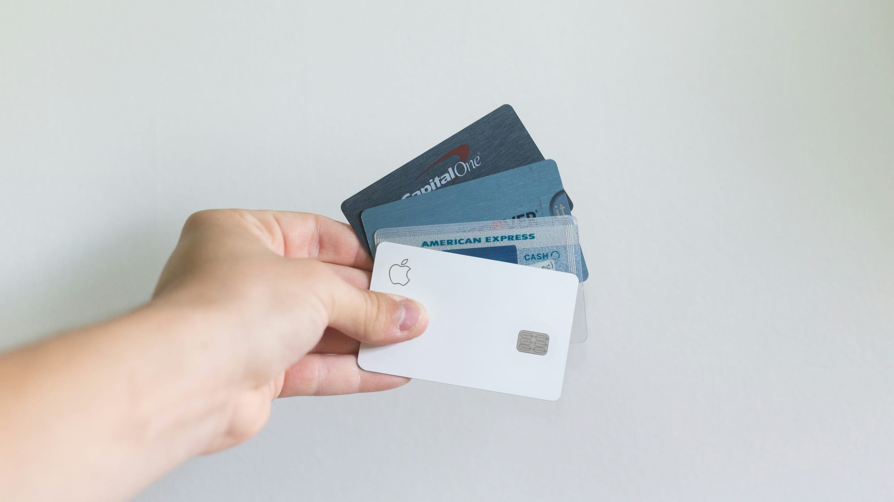

How to Maximize Credit Card Rewards: The Complete Guide for 2026
I tested the best ways to earn, use and redeem credit card rewards in 2026. Cashback, travel points, and the stack that earns me $1,800/year.
Z Zar · 18 Apr 2026 — 12 min read

Want to go deeper on this? See Best No-Fee Checking Accounts in 2026.
📚 Part of our Budget & Debt Guide
Used correctly, credit cards are one of the most powerful financial tools available. Used incorrectly, they are a debt trap. The difference comes down to one rule: pay your balance in full every month, without exception.
If you can commit to that rule, here is how to turn everyday spending into thousands of dollars in rewards every year.
How Credit Card Rewards Actually Work
Every time you swipe a rewards credit card, you earn points, miles, or cash back — typically 1-5% of your purchase amount. These rewards are funded by the interchange fees merchants pay and, more significantly, by the interest paid by cardholders who carry a balance.
If you pay your balance in full every month, you pay zero interest and keep all your rewards. You are essentially getting a 1-5% discount on everything you buy, funded by people who do not pay their balance.
The Two Types of Rewards Cards
📘 Free Download
Get the 6-page FI Checklist PDF
A roadmap to financial independence — sent to your inbox the moment you subscribe. Plus weekly investing playbooks.
Send me the PDF →No spam. Unsubscribe anytime.
Cash Back Cards — straightforward. You earn a percentage of every purchase as cash deposited to your account or applied as a statement credit. No points systems to learn, no transfer partners to navigate.
Travel Points Cards — more complex but potentially far more valuable. Points can be transferred to airline and hotel programs where they are worth 1.5-3 cents each — significantly more than their face value.
The Best Rewards Strategy for 2026
Step 1: Get One Great Cash Back Card First
If you are new to rewards cards, start simple. The best flat-rate cash back cards in 2026:
- Citi Double Cash — 2% cash back on everything. No categories to track, no annual fee. The simplest rewards card available.
- Chase Freedom Unlimited — 1.5% on everything, 3% on dining and drugstores, 5% on travel booked through Chase. No annual fee.
Step 2: Add a Category Card
Once you have a flat-rate card, add one that earns more in your biggest spending categories.
- American Express Blue Cash Preferred — 6% on US supermarkets (up to $6,000/year), 6% on streaming, 3% on gas. $95 annual fee easily justified if you spend $200+/month on groceries.
- Chase Sapphire Preferred — 3x on dining, 3x on streaming, 2x on travel. $95 annual fee. Points transfer to 14 airline and hotel partners at 1:1 ratio.
Step 3: Capture Sign-Up Bonuses
The biggest rewards come from welcome bonuses. Most premium cards offer $500-$1,000 in value when you spend a certain amount in the first 3 months.
- Chase Sapphire Preferred: 60,000 points after $4,000 spend in 3 months — worth $750 in travel.
- American Express Gold: 60,000 points after $6,000 spend in 6 months — worth $600-$1,200 depending on redemption.
The strategy: apply for one card, hit the bonus, use the rewards, then consider the next card. Never apply for more than one card every 3-6 months.
Step 4: Never Pay Interest
This cannot be stressed enough. Credit card interest rates average 27% in 2026. A single month of carrying a balance erases months of rewards.
Set up autopay for the full statement balance every month. This is non-negotiable.
How to Combine Multiple Cashback Credit Cards for Maximum Rewards in 2026
The single biggest mistake high-earners make is putting all spending on one card. A two-card or three-card stack consistently outperforms any single card by 1.5% to 3% in effective cashback — that's $450 to $900 per year on $30,000 of annual spending, with the same purchases you were going to make anyway.
The proven stack for 2026 is built around three roles:
- Flat-rate "everything else" card — 2% on every purchase. Options: Citi Double Cash, Wells Fargo Active Cash, SoFi Credit Card.
- Category booster — 5-6% on rotating or fixed bonus categories. Options: Chase Freedom Flex (rotating 5%), Blue Cash Preferred (6% groceries, 3% gas).
- Travel / sign-up bonus rotator — Chase Sapphire Preferred, Capital One Venture X. You keep this one in the drawer except for travel and big purchases that count toward the next sign-up bonus.
The rule: every dollar goes on whichever card pays the highest rate for that category. A simple spreadsheet (or app like CardPointers or MaxRewards) tells you in 2 seconds. Most people who run this for 6 months see their effective rate jump from ~1.5% to ~3.8%.
One warning: never carry a balance to chase rewards. Credit card APRs at 27% will eat 9 years of stacking gains in a single month of revolving debt.
Fastest Ways to Earn Credit Card Points in 2026 (Without Overspending)
Sign-up bonuses are the fastest legitimate way to earn points — single bonuses commonly run 60,000-100,000 points, worth $600-$2,000 depending on redemption. The trick is hitting the minimum spend ($3,000-$5,000 in 3 months) using purchases you would have made anyway: rent (via Plastiq or Bilt), quarterly taxes, insurance premiums paid annually.
After sign-up bonuses, the next-fastest earners in 2026 are:
- Category multipliers timed to spending cycles. Move all grocery spending to a 6% groceries card. Move all dining to a 4x dining card. The shift is mechanical and adds ~$400-$600/year on average household spending.
- Shopping portals before every online purchase. Rakuten, TopCashback, and the issuer portals (Chase, Amex, Capital One) stack on top of card cashback. Average lift: 1-8% per transaction. Click the portal first, then check out.
- Refer-a-friend bonuses. Most issuers pay $50-$200 per referral, capped around 5/year. If you have a spouse or family member opening a card anyway, refer them.
- Dining and shopping enrollments. Amex Offers, Chase Offers, BankAmeriDeals — free monthly enrollments that add 5-15% back on specific merchants. Takes 2 minutes per month to scan and add.
Smartest Ways to Redeem Credit Card Rewards (and the Worst Mistakes)
How you redeem points matters more than how many you earn. The same 100,000 points can be worth $1,000 (cashback) or $2,400 (transferred to Hyatt for a high-value stay). Here is the redemption hierarchy ranked by value per point in 2026:
| Redemption method | Value per point (¢) | Effort |
|---|---|---|
| Transfer to airline / hotel partner (sweet spots) | 2.0 – 5.0¢ | High |
| Issuer travel portal (Chase Pay Yourself Back, Amex Pay With Points) | 1.25 – 1.5¢ | Low |
| Statement credit / cashback | 1.0¢ | Zero |
| Gift cards (Amazon, Target, etc.) | 0.8 – 1.0¢ | Low |
| Merchandise (Amazon Pay With Points) | 0.5 – 0.8¢ | Zero |
The worst mistakes: redeeming Chase Ultimate Rewards for Amazon checkout (0.8¢/pt), redeeming Amex MR for statement credit (0.6¢/pt), and letting points expire because the card was downgraded. Rule of thumb: if you have transferable points (Chase UR, Amex MR, Capital One Venture, Citi ThankYou) and you take any vacation per year, transfer to airline or hotel partners. Otherwise default to cashback — at least you get 1¢ guaranteed.
How to Maximize Travel Rewards with Credit Cards in 2026
Travel redemptions are where credit card rewards shift from "nice 2% discount on groceries" to "$8,000 European vacation for $400 in taxes." But the gap between people who do this well and people who burn their points on bad redemptions is enormous, and the difference comes down to three habits.
- Learn 3-4 transfer partner sweet spots and stop there. You don't need to be a points-and-miles encyclopedia. The big ones in 2026: Hyatt (1.7¢-3¢ value, transfers 1:1 from Chase UR), Air France/KLM Flying Blue (1.5¢-2.5¢, transfers from Amex, Chase, Capital One, Citi), Virgin Atlantic (great for ANA business class redemptions). That's it. Stop reading blogs and start using these.
- Plan trips around the points, not the other way around. Award space dictates dates. If you're flexible on dates and routing, redemptions improve 30-50% in value. If you need to fly on specific dates, you'll often pay 2-3x the points for the same seat.
- Use ExpertFlyer or seats.aero for award availability. Manual searching across 8 airline programs is unbearable. These tools surface available award seats in seconds and show you which transfer partner is cheapest.
The single best beginner card for travel in 2026 is the Chase Sapphire Preferred — $95 annual fee, 60k-100k sign-up bonus depending on offer, transfers to 14 partners, and 1.25¢ minimum redemption through Chase's travel portal. Hold for 12 months, evaluate upgrade to Reserve.
Average Credit Card Rewards Value Per Dollar Spent (2026 Data)
Knowing the realistic average is what separates strategic earners from people who think they're "doing well" because they got $40 back last year. Here are the actual numbers for 2026:
| Spending category | Best available rate | Avg actual earn (most users) |
|---|---|---|
| Groceries | 6% (Blue Cash Preferred) | 1.5% |
| Dining | 4x points (Sapphire, Gold) | 2% |
| Gas | 5% (Citi Custom Cash quarterly) | 1.5% |
| Travel | 5x points (Amex Gold flights, Chase Reserve) | 2% |
| Everything else | 2% (Citi Double Cash, Wells Active Cash) | 1.2% |
The average US household spends $61,000/year on credit cards. At the typical 1.5% effective rate, that's $915/year in rewards. At the optimized 3.5% rate using the stack from the section above, it's $2,135/year — a $1,220 difference for the same purchases. That single number is why this is worth 30 minutes of setup.
How Much Can You Realistically Earn?
On $3,000/month in spending with an optimized two-card setup:
- Groceries ($600/month) at 6% = $36/month
- Dining ($400/month) at 3% = $12/month
- Everything else ($2,000/month) at 2% = $40/month
- Total: $88/month — $1,056/year
Add one sign-up bonus per year at $500-$750, and you are earning $1,500-$1,800 annually in rewards from spending you would do anyway.
Common Mistakes to Avoid
- Spending more to earn rewards. Rewards are only valuable on purchases you were already going to make. Overspending to hit a bonus erases the value.
- Carrying a balance even once. One month of 27% interest wipes out months of 2% rewards.
- Ignoring annual fees. Do the math. A $95 annual fee is worth it if you earn $200+ in rewards from that card's bonus categories. If not, downgrade or cancel.
- Having too many cards. Two to three cards is optimal for most people. More becomes difficult to manage and can tempt overspending.
Best Ways to Redeem Credit Card Points for Maximum Value in 2026
Not all redemptions are equal — and most cardholders leave 30-60% of their points value on the table by choosing the wrong redemption path. Here's the ranking of how to maximize credit card points value in 2026, ordered by cents-per-point (CPP) returned:
- Transfer to airline/hotel partners for premium cabin travel — 3-6 cents per point (CPP). Chase Sapphire to United Polaris, Amex to ANA First, Citi to Turkish Airlines. The single highest-value redemption category.
- Pay Yourself Back / shopping portals at elevated rates — 1.5-2 CPP. Chase's rotating bonus categories (groceries, dining, home improvement) often hit 1.5x value when redeemed through their portal.
- Statement credit / cash back — 1 CPP (always 100% of cash value). The default redemption — nothing fancy but never the worst choice.
- Gift cards from issuer portal — 0.9-1.0 CPP. Sometimes occasional promotional rates push to 1.1 but usually no upside.
- Pay with points at Amazon / PayPal checkout — 0.8 CPP. Convenient but you're losing 20% of value vs cash back.
- Merchandise from issuer catalog — 0.5-0.7 CPP. Never do this. Consistently the worst conversion rate available.
The single best way to redeem credit card points for maximum value in 2026 is transferring to a hotel or airline partner when you have a specific high-value redemption in mind — a business-class international ticket, a luxury hotel during peak season, or a domestic flight where cash prices are above $400. Outside of those scenarios, statement credit at 1 CPP is the boring-but-reliable choice that beats 80% of "creative" redemptions.
Credit Card Rewards FAQ (2026)
What is the fastest way to earn credit card points in 2026?
The fastest legitimate way is stacking a category card with a sign-up bonus offer. A 4-6% groceries card or 3% dining card hitting a $750 bonus after $3,000 spent in 90 days is the highest-velocity points-per-dollar method available without overspending.
What is the smartest way to redeem credit card rewards in 2026?
For cash back: redeem as statement credits (always full value). For points: transfer to airline or hotel partners when redemption value exceeds 1.5 cents per point. Never redeem points for merchandise — that is consistently the worst conversion rate (0.5-0.8 cents per point).
What are the best ways to use credit card rewards in 2026?
Top-down: statement credits and travel point transfers beat everything else. Statement credits return 100% of the cash value with zero hassle. Travel transfers (Chase, Amex, Capital One) can return 3-5x the cash value if you redeem business-class flights or premium hotels. Avoid gift cards (typically 90-95% value) and merchandise (50-80% value).
What are the best ways to earn more credit card points in 2026?
Three-tier stack: a flat 2% everywhere card for general spend, a 4-6% category card (groceries, dining, gas), and a sign-up bonus rotation (one new card with a $500-1000 bonus every 12 months). This combination consistently doubles or triples the rewards velocity of a single 1.5% card.
How do you maximize travel rewards with credit cards in 2026?
Open a transferable points card (Chase Sapphire, Amex Gold/Platinum, Capital One Venture X) and pair it with one of their travel partners loyalty programs. Transferring 60,000 points to a partner for a business-class redemption can return 4-8 cents per point — 3-5x the value of cash back.
What are the best ways to combine multiple cashback credit cards in 2026?
Use a 2-3 card stack: one flat 2% everywhere card (Citi Double Cash or Wells Fargo Active Cash), plus one category card (groceries 6% or dining 3-4%). Add a third card only if a specific category (travel, gas, online shopping) is more than 15% of your monthly spend.
What is the best way to maximize credit card points value in 2026?
Track cost-per-point (CPP) on every redemption. Cash back equals 1 cent per point. Statement credits = 1 CPP. Transferable points to airline partners regularly hit 2-5 CPP for business-class international tickets. The single highest-CPP redemption category in 2026 is United Polaris business class via Chase points (4-6 CPP).
What is the average credit card rewards value per dollar spent in 2026?
The average US household earns 1.2-1.5 cents per dollar in unoptimized rewards. With a 2-card stack, that climbs to 2.5-3 cents per dollar. Travel optimizers using point transfers hit 3-5 cents per dollar effective value, though that requires consistent travel to convert.
What are some tips for maximizing US credit card rewards in 2026?
Pay every balance in full (rewards are worthless if you carry a 24% APR balance). Pick cards aligned to your top 3 spend categories (run a 90-day audit first). Stack a sign-up bonus once per year. Use category portals (Rakuten + chase shopping portal) for online purchases — they often add 3-10% on top of card rewards.
Are credit card rewards worth it in 2026 if I carry a balance?
No. The average credit card APR in 2026 is 24-27%. Even the best 6% cashback card cannot offset one month of interest. Pay in full every month or skip rewards cards entirely.
Best Cashback Stacking Tools (Rakuten vs Honey vs PayPal)
Combining a 2% cash back card with a browser cashback extension can push your effective rate to 8-12% on online shopping. The three main options in 2026:
- Rakuten — highest payouts on 3,500+ stores, 1-15% cash back, $30 sign-up bonus, pays quarterly via PayPal or check. Best for high-volume online shoppers.
- PayPal Honey — automatic coupon code testing at checkout, smaller cashback percentages (typically 1-5%), but the coupon engine alone saves $50-$100/year for most users. Best as a passive layer.
- Capital One Shopping — similar coupon + cashback model to Honey, slightly broader store coverage, price-drop alerts on watched products. Free, no card required.
The honest framing: Rakuten wins on cash back per click; Honey wins on passive coupon savings; Capital One Shopping wins on price monitoring. Most disciplined stackers run Rakuten + Honey together on the same browser — Honey applies coupons before checkout, Rakuten attributes the sale after.
For the full comparison including payout reliability and dispute rates, see our guide to the best cashback apps in 2026.
The Bottom Line
Credit card rewards are free money for disciplined spenders. The system rewards people who pay their balance in full and punishes those who do not.
Start with one solid cash back card. Pay it in full every month. Earn your rewards. Then optimize from there.
Used correctly, your credit cards should be earning you $1,000+ per year — not costing you a cent.